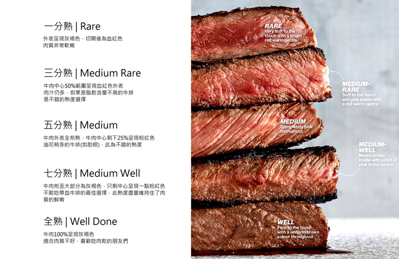

牛排。您的牛排要幾分熟?
我們去吃牛排時，只要是不錯的餐廳通常都會詢問您這個問題
How would you like your steak done?
「您的牛排要幾分熟？」
因為牛排會依熟度不同而有不同風味
肉品本身的脂肪分布也會影響到味道
如菲力本身脂肪含量不高，同時筋膜已去除
因此低熟度可以帶來最佳的軟嫩口感
相反的肋眼因為脂肪含量高，熟度低反而會有點膩
以下就五個熟度等級做介紹：

一分熟 | Rare
外表呈現薄灰褐色，肉質軟嫩。
三分熟 | Medium Rare
牛肉中心50%範圍呈現血紅色外表
肉汁仍多，如果是脂肪含量不高(如菲力)的牛排是不錯的熟度選擇
適合對肉質要求的饕客品嘗。
五分熟 | Medium
牛肉外表全煎熟，牛肉中心剩下25%呈現粉紅色
油花稍多的牛排(如肋眼)，此為不錯的熟度。
七分熟 | Medium Well
牛肉煎至大部分為灰褐色，只剩中心呈現一點粉紅色
不敢吃帶血牛排的最佳選擇，此熟度盡量維持住了肉質的鮮嫩。
全熟 |Well Done
牛肉100%呈現灰褐色，內部幾乎無水分，口感也偏硬
適合肉質不好的牛排，如果是好的牛肉，十分不建議吃全熟。
最後
熟度依個人喜好略有不同，下次去餐廳或著在家煎牛排時也可以嘗試看看不同的熟度
找到屬於您自己的最佳風味喔!